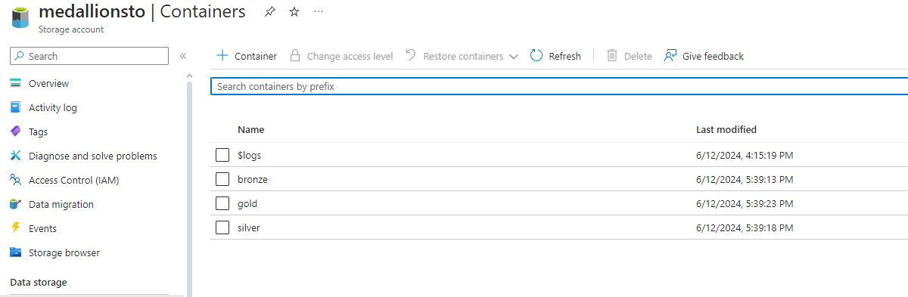
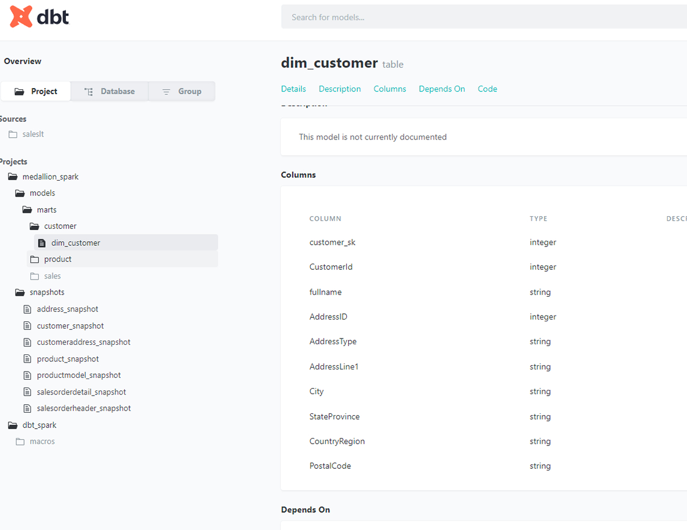
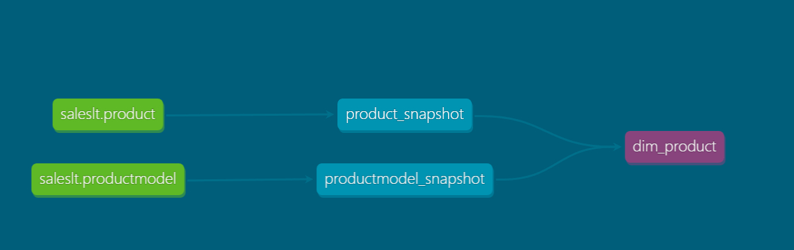

Pipelines and Databases in Azure
I leverage Apache Spark, Azure Databricks, Data Build Tool, and Microsoft Azure for data ingestion into the lakehouse, and utilize Databricks for data transformation.
The Containers
In a lakehouse architecture for data management, the use of the bronze, silver, and gold layers ensures that our data is handled effectively from its raw form to its use in analytics. The bronze layer stores raw data straight from its sources, keeping it intact and preserving its original state. This layer is crucial for maintaining data lineage and ensuring I can always trace back to where our data originated. The silver layer comes next, where data is cleaned, transformed, and structured for analysis. Here, I focus on improving data quality and preparing it for further processing. Finally, the gold layer houses refined and enriched data that's optimized for business intelligence and decision-making. It includes metadata and context that make the data reliable and easy to use for various analytical purposes. Together, these layers ensure that our data remains accurate, accessible, and valuable throughout its lifecycle within our organization.
The Pipeline
I've implemented an Azure Data Factory (ADF) pipeline to automate our data ingestion workflow. The pipeline begins by utilizing the lookup activity in ADF, which enables us to dynamically fetch metadata about all relevant tables from our sample data sources. Once the lookup activity completes its task, the pipeline proceeds to the next stage which is data copying. Here, I leverage ADF's copy activity to extract data from the identified tables and load it into our bronze layer.
Creating and mounting the scope with databricks
The next step was creating a secret scope in Azure Databricks. This scope serves as a secure repository for storing and managing sensitive information such as credentials and connection strings. Once the secret scope was established, I proceeded to mount it onto the respective bronze, silver, and gold data folders within Azure Databricks. With the secret scope successfully mounted, I can now conveniently reference these secrets in my notebooks and pipelines using predefined paths. This setup not only enhances security by avoiding direct exposure of sensitive data in my code but also streamlines the integration of secure credentials into my data processing pipeline. Now, I'm ready to seamlessly incorporate this configuration into my pipeline logic, including integrating it into my ForEach loop for efficient and secure data operations. After this, I am going to write some code to dump the data into our DataBricks.
Using DBT for data manipulation
Now I begin this by creating the snapshots. Creating snapshots serves as a foundational step in our data pipeline strategy, enabling us to meticulously track and document the evolution of our data over time. These snapshots capture the exact state of our data at specific points in its lifecycle. Once these snapshots are created, they populate our silver layer within our data architecture. With the silver layer populated by our snapshots, it signifies that our data is now primed for major transformations. The folders for these files can be found in the github linked above or below.
 